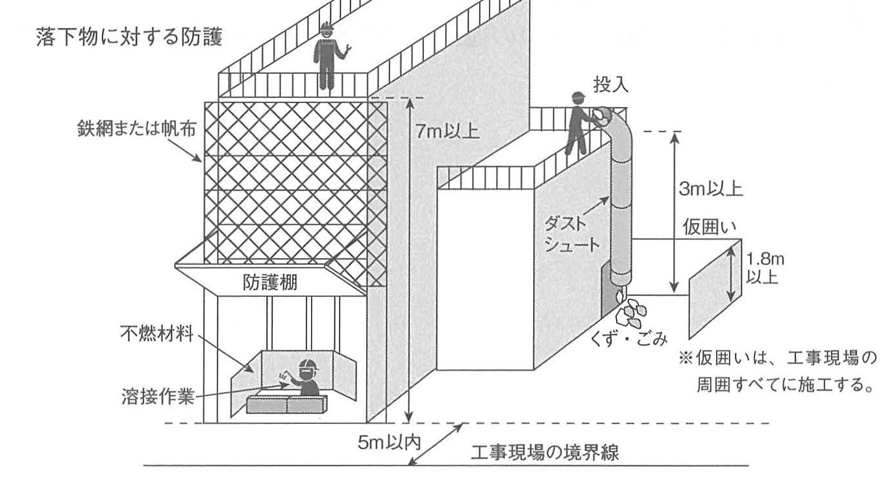

原文
設問1 「建設業法」に基づく主任技術者及び監理技術者の職務等
「建設業法」に基づく主任技術者及び監理技術者の職務等に関する次の文章において、□に当てはまる語句を記入しなさい。
主任技術者及び監理技術者は、工事現場における建設工事を適正に実施するため、当該建設工事の ① 施工計画 の作成、工程管理、品質管理その他の技術上の管理及び当該建設工事の施工に従事する者の技術上の ② 指導監督の職務を誠実に行わなければならない。
設問1 「建設業法」に基づく主任技術者及び監理技術者の職務等
「建設業法」に基づく主任技術者及び監理技術者の職務等に関する次の文章において、□に当てはまる語句を記入しなさい。
主任技術者及び監理技術者は、工事現場における建設工事を適正に実施するため、当該建設工事の ① 施工計画 の作成、工程管理、品質管理その他の技術上の管理及び当該建設工事の施工に従事する者の技術上の ② 指導監督の職務を誠実に行わなければならない。
Câu 1: Chức trách của kỹ sư chủ nhiệm và kỹ sư giám lý theo Luật Kinh doanh Xây dựng
Trong đoạn văn sau về chức trách của kỹ sư chủ nhiệm（主任技術者）và kỹ sư giám lý（監理技術者）theo Luật Kinh doanh Xây dựng（建設業法）, hãy điền từ thích hợp vào các ô trống.
Kỹ sư chủ nhiệm và kỹ sư giám lý, để thực hiện công trình xây dựng tại công trường một cách phù hợp, phải thực hiện một cách nghiêm túc các chức trách gồm: lập ① kế hoạch thi công（施工計画）, quản lý tiến độ, quản lý chất lượng, các công tác quản lý kỹ thuật khác và thực hiện ② chỉ đạo, giám sát về mặt kỹ thuật（指導監督） đối với những người tham gia thi công công trình đó.
① 施工計画 ② 指導監督
主任技術者および監理技術者は、工事現場における建設工事を適正に実施するため、当該建設工事の施工計画の作成・工程管理・品質管理・その他の技術上の管理および当該建設工事の施工に従事する者の技術上の指導監督の職務を、誠実に行わなければならない。
工事現場における建設工事の施工に従事する者は、主任技術者または監理技術者がその職務として行う指導に従わなければならない。
※関係法令では、一部の法文について、法文そのものを掲載するよりも読みやすさを優先するため、漢字・ひらがなの使用方法や、句読点の位置等を変更しています。
Kỹ sư chủ nhiệm và kỹ sư giám lý phải thực hiện một cách nghiêm túc các chức trách gồm lập kế hoạch thi công, quản lý tiến độ, quản lý chất lượng và các công tác quản lý kỹ thuật khác, đồng thời chỉ đạo và giám sát về mặt kỹ thuật đối với những người tham gia thi công, nhằm bảo đảm công trình xây dựng tại công trường được thực hiện một cách phù hợp.
Người tham gia thi công công trình xây dựng tại công trường phải tuân theo sự chỉ đạo do kỹ sư chủ nhiệm hoặc kỹ sư giám lý thực hiện trong phạm vi chức trách của họ.
Chú thích của sách: đối với một số điều luật liên quan, sách ưu tiên tính dễ đọc và có điều chỉnh cách sử dụng kanji, hiragana và vị trí dấu câu so với nguyên văn pháp luật.
設問2 「建築基準法施行令」に基づく落下物に対する防護
建築工事等を行なう場合において、建築のための工事をする部分が工事現場の境界線から水平距離が 5m以内 で、かつ、地盤面から高さが 7m以上 にあるとき、その他はつり、除却、外壁の修繕等に伴う落下物によって工事現場の周辺に危害を生ずるおそれがあるときは、国土交通大臣の定める基準に従って、工事現場の周囲その他危害防止上必要な部分を 鉄網又は帆布 でおおう等落下物による危害を防止するための措置を講じなければならない。
Câu 2: Phòng hộ đối với vật rơi theo Nghị định thi hành Luật Tiêu chuẩn Xây dựng
Khi thực hiện công trình xây dựng, nếu phần công trình đang thi công nằm trong phạm vi khoảng cách ngang tính từ đường ranh giới công trường không quá 5 m và ở độ cao tính từ mặt đất từ 7 m trở lên, hoặc có nguy cơ vật rơi từ công tác đục phá, tháo dỡ, sửa chữa tường ngoài v.v. gây nguy hại cho khu vực xung quanh công trường, thì phải thực hiện biện pháp phòng ngừa nguy hại do vật rơi, chẳng hạn che phủ các bộ phận cần thiết bằng lưới thép hoặc bạt.
③ 5 m ④ 鉄網
建築工事等において、工事現場の境界線からの水平距離が 5m以内 で、かつ、地盤面からの高さが 3m以上 の場所から、くず・ごみ・その他飛散するおそれのある物を投下する場合においては、ダストシュートを用いる等、当該くず・ごみ等が工事現場の周辺に飛散することを防止するための措置を講じなければならない。
建築工事等を行う場合において、建築のための工事をする部分が、工事現場の境界線からの水平距離が 5m以内 で、かつ、地盤面からの高さが 7m以上 にあるときや、はつり・除却・外壁の修繕等に伴う落下物によって工事現場の周辺に危害を生ずるおそれがあるときは、工事現場の周囲・その他危害防止上必要な部分を、鉄網または帆布で覆う等、落下物による危害を防止するための措置を講じなければならない。
Khi chủ động thả phế liệu, rác hoặc vật có nguy cơ phát tán từ vị trí có khoảng cách ngang tới ranh giới công trường không quá 5 m và chiều cao so với mặt đất từ 3 m trở lên, phải dùng ống thải rác（ダストシュート）hoặc biện pháp tương đương để ngăn phát tán ra xung quanh.
Khi phần công trình đang thi công có khoảng cách ngang tới ranh giới công trường không quá 5 m và chiều cao so với mặt đất từ 7 m trở lên, hoặc có nguy cơ vật rơi do đục phá, tháo dỡ, sửa chữa tường ngoài v.v., phải che bằng lưới thép hoặc bạt hoặc thực hiện biện pháp tương đương để phòng ngừa nguy hại do vật rơi.
| Tình huống | Khoảng cách ngang tới ranh giới | Chiều cao | Biện pháp |
|---|---|---|---|
| Thả phế liệu, rác | ≤ 5 m | ≥ 3 m | ダストシュート v.v. |
| Nguy cơ vật rơi từ phần công trình | ≤ 5 m | ≥ 7 m | 鉄網・帆布 v.v. |
防護棚: sàn/mái phòng hộ; 不燃材料: vật liệu không cháy; 溶接作業: công tác hàn; 仮囲い: hàng rào tạm; chiều cao hàng rào tạm 1,8 m trở lên. Hình ghi chú rằng hàng rào tạm được thi công xung quanh toàn bộ công trường.

設問3 「労働安全衛生法」に基づく特定元方事業者等の講ずべき措置
特定元方事業者は、その労働者及び関係請負人の労働者の作業が同一の場所において行われることによって生ずる ⑤ 労働災害を防止するため、⑥ 協議組織の設置及び運営を行うこと、作業間の連絡及び調整を行うこと、作業場所を巡視すること、関係請負人が行う労働者の安全又は衛生のための教育に関する指導及び援助を行うこと等に関する必要な措置を講じなければならない。
Câu 3: Các biện pháp mà doanh nghiệp nguyên thầu đặc định phải thực hiện theo Luật An toàn và Sức khỏe Lao động
Doanh nghiệp nguyên thầu đặc định phải thực hiện các biện pháp cần thiết nhằm phòng ngừa ⑤ tai nạn lao động phát sinh do người lao động của doanh nghiệp đó và của các nhà thầu liên quan cùng làm việc tại một địa điểm, bao gồm ⑥ thành lập và vận hành tổ chức phối hợp, liên lạc và điều phối giữa các công việc, tuần tra địa điểm làm việc, và chỉ đạo, hỗ trợ hoạt động giáo dục về an toàn hoặc vệ sinh lao động do các nhà thầu liên quan thực hiện.
⑤ 労働災害 ⑥ 協議組織
特定元方事業者は、その労働者および関係請負人の労働者の作業が同一の場所において行われることによって生ずる労働災害を防止するため、次の事項に関する必要な措置を講じなければならない。
Để phòng ngừa tai nạn lao động phát sinh do người lao động của doanh nghiệp nguyên thầu đặc định và người lao động của các nhà thầu liên quan cùng làm việc tại một địa điểm, doanh nghiệp nguyên thầu đặc định phải thực hiện các biện pháp cần thiết sau:
| 日本語 | 読み方 | Tiếng Việt | Giải thích | Liên quan |
|---|---|---|---|---|
| 主任技術者 | しゅにんぎじゅつしゃ | Kỹ sư chủ nhiệm | Chức danh kỹ thuật được nêu trong 建設業法. | 施工計画・工程管理・品質管理 |
| 監理技術者 | かんりぎじゅつしゃ | Kỹ sư giám lý | Chức danh kỹ thuật thực hiện các chức trách quản lý kỹ thuật theo nội dung trang. | 指導監督 |
| 施工計画 | せこうけいかく | Kế hoạch thi công | Một nội dung thuộc chức trách của 主任技術者・監理技術者. | 建設業法第26条の4 |
| 指導監督 | しどうかんとく | Chỉ đạo và giám sát | Chỉ đạo, giám sát về mặt kỹ thuật đối với người tham gia thi công. | 主任技術者・監理技術者 |
| 落下物 | らっかぶつ | Vật rơi | Đối tượng nguy hại cần phòng hộ đối với khu vực xung quanh công trường. | 建築基準法施行令第136条の5 |
| 鉄網 | てつもう | Lưới thép | Vật liệu che chắn được nêu trong biện pháp phòng hộ vật rơi. | 帆布 |
| 帆布 | はんぷ | Bạt | Vật liệu che phủ được nêu cùng với 鉄網. | 落下物に対する防護 |
| ダストシュート | だすとしゅーと | Ống thải rác | Dùng khi thả phế liệu, rác từ vị trí có điều kiện chiều cao quy định. | 5m以内・3m以上 |
| 防護棚 | ぼうごだな | Sàn/mái phòng hộ | Bộ phận phòng hộ được thể hiện trong hình minh họa Book page 623. | 落下物 |
| 仮囲い | かりがこい | Hàng rào tạm công trường | Hình minh họa ghi chiều cao 1,8 m trở lên và bố trí quanh công trường. | 1.8m以上 |
| 特定元方事業者 | とくていもとかたじぎょうしゃ | Doanh nghiệp nguyên thầu đặc định | Chủ thể phải thực hiện các biện pháp phối hợp an toàn được nêu trong trang. | 労働安全衛生法第30条 |
| 関係請負人 | かんけいうけおいにん | Nhà thầu liên quan | Nhà thầu có người lao động cùng tham gia tại địa điểm làm việc. | 特定元方事業者 |
| 労働災害 | ろうどうさいがい | Tai nạn lao động | Đối tượng cần phòng ngừa trong trường hợp nhiều bên cùng làm việc tại một địa điểm. | 混在作業 |
| 協議組織 | きょうぎそしき | Tổ chức phối hợp | Tổ chức phải được thành lập và vận hành theo nội dung trang. | 連絡・調整・巡視 |
| 巡視 | じゅんし | Tuần tra | Kiểm tra trực tiếp địa điểm làm việc. | 労働安全衛生法第30条 |
建設業法 trong phần này tập trung vào chức trách quản lý kỹ thuật của 主任技術者・監理技術者. 建築基準法施行令 quy định biện pháp phòng hộ để tránh nguy hại do vật rơi đối với khu vực xung quanh công trường. 労働安全衛生法 tập trung vào phòng ngừa 労働災害 khi người lao động của nhiều đơn vị cùng làm việc tại một địa điểm.
| Nhóm | Đối tượng ghi nhớ chính | Từ khóa đáp án |
|---|---|---|
| 建設業法 | Chức trách kỹ thuật tại công trường | 施工計画 / 指導監督 |
| 建築基準法施行令 | Phòng hộ vật rơi và điều kiện khoảng cách, chiều cao | 5m / 鉄網 |
| 労働安全衛生法 | Điều phối an toàn trong công việc hỗn hợp | 労働災害 / 協議組織 |
| Ô | Đáp án | Nhóm pháp quy |
|---|---|---|
| ① | 施工計画 | 建設業法 |
| ② | 指導監督 | 建設業法 |
| ③ | 5 m | 建築基準法施行令 |
| ④ | 鉄網 | 建築基準法施行令 |
| ⑤ | 労働災害 | 労働安全衛生法 |
| ⑥ | 協議組織 | 労働安全衛生法 |
5 m + 3 m: thả くず・ごみ → ダストシュート. 5 m + 7 m: nguy cơ 落下物 từ phần công trình → 鉄網・帆布. Khoảng cách ngang 5 m giống nhau, nhưng điều kiện chiều cao và biện pháp khác nhau.
協議組織の設置・運営 → 連絡・調整 → 巡視 → 教育への指導・援助. Đối với trường hợp thuộc đối tượng quy định còn có kế hoạch tiến trình công việc, kế hoạch bố trí máy móc・thiết bị và hướng dẫn các biện pháp cần thực hiện.
| {{HEADER_1}} | {{HEADER_2}} |
|---|---|
| {{ROW_KEY}} | {{ROW_RELATION}} |
{{NOTE_CONTENT}}
{{WARNING_CONTENT}}
{{MEMORY_ITEM}}